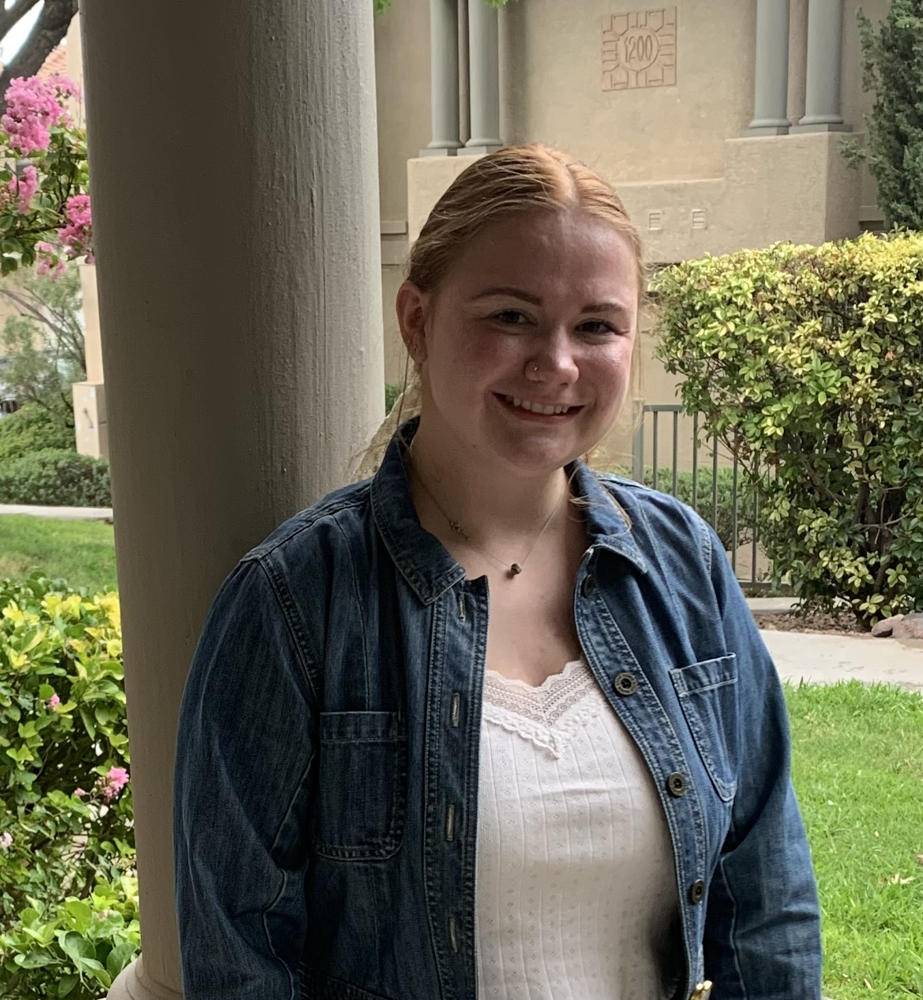

Hello! My name is Kassidy Shedd. I am currently attending Northwestern University to get my
Masters of Science in Robotics. My expected graduation is September 2024. I graduated with my
Bachelors of Science in Mechanical Engineering from New Mexico State University in 2023.